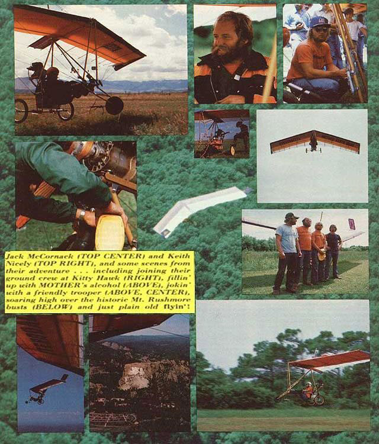

PHOTOS BY THE PTERODACTYL CREW & MOTHER EARTH NEWS
Jack McCornack (top center) and Keith Nicely (top right), and some scenes from their adventure ... including joining their ground crew at Kitty Hawk (right), fillin' up with Mother Earth News alcohol fuel (above center), jokin' with a friendly trooper (above center), soaring high over the historic Mt. Rushmore busts (below) and just plain old flying'!